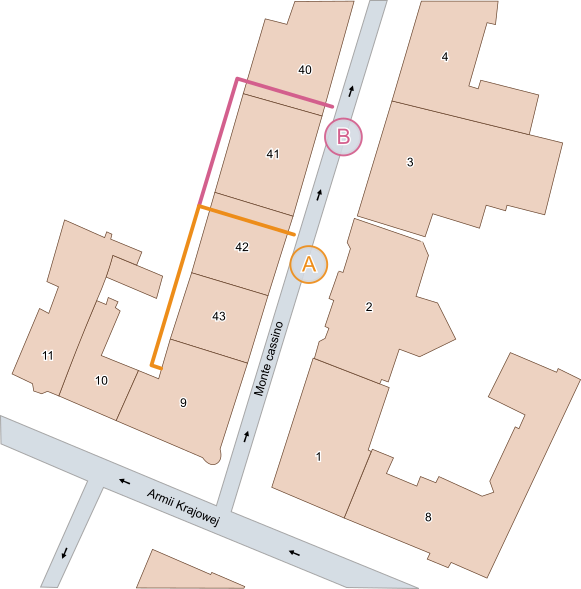

Hi! I'm Sue
Recently I have been learning front-end and I hope that it will soon become my job. I am interested in
design,
psychology and manual work. I love to create different things, from pretty presentations in PP and Prezi through homemade cosmetics and cleaning detergents to acrylic painting and sewing. I am good at inventing things I need from nothing. In the future I would like to focus
on
making websites adapted to the needs of people with vision disorders.
Inkscape I know the basics of Inkscape, I mainly use it to convert
simple
raster images into vector graphics and adapt them to my needs. This is especially useful when the image I want to
use is in poor quality. This is the program I used to desing my logo.

I know the basics of HTML and CSS. I can do simple animations and transforms in CSS. I use
Flexbox and Media Queries to create responsive websites. I learned a littl bit Bootstrap. I can use
pseudo
class and elements. I use HTML tags.
In high school I studied C ++, and in college we did projects in Wolfram Mathematica. It taught me logical
thinking and problem solving. I use the information quite well, thanks to which JS is used on this page, even
thougt I haven't started learning it yet.
I would like to learn how to better manage a project and use GIT. At the moment I am learning
front-end,
but in the future I might learn back-end as well. I am interested in the issue of seeing and perception,
I would like
to make pages that will be good for people with vision disorders, e.g. color blindness.